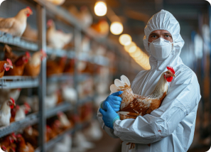
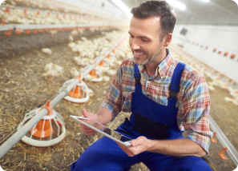
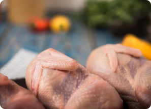

Ternak Lebih Mudah menggunakan LyfeStox
LyfeStox adalah platform yang bergerak di bidang teknologi peternakan. Kami menyediakan solusi untuk pengelolaan peternakan ayam yang dilengkapi dengan AI untuk memudahkan pengecekan Kesehatan ayam, Guna Membantu Peternak meningkatkan efisiensi dan produktivitas peternakan ayam

Mengapa Harus LyfeStox
Memudahkan Pengelolaan Peternakan Ayam
LyfeStox menyediakan berbagai fitur yang memudahkan peternak dalam mengelola peternakan mereka, mulai dari laporan harian kandang, Pengelolaan pakan, dan berbagai fitur lainnya.

Monitoring Kesehatan Ayam
LyfeStox dilengkapi fitur AI canggih yang memungkinkan pengecekan kesehatan ayam secara akurat, membantu peternak memantau kondisi ayam dengan lebih efisien dan tepat waktu
Update Informasi Dunia Perunggasan
Peternak.id memiliki menyediakan fitur update informasi dunia perunggasan seperti artikel budidaya unggas, berita seputar peternakan dan tips peternak Hal ini memungkinkan peternak untuk mendapatkan berbagai informasi terkini diduni perunggasan.
Fitur-Fitur
Inventaris Hewan-Hewan Ternak

Inventaris hewan ternak adalah sistem pencatatan dan pengelolaan data yang mencakup jumlah, jenis, usia, kondisi kesehatan, dan status reproduksi hewan di peternakan. Sistem ini membantu peternak memantau perkembangan ternak, memastikan kesejahteraan mereka, serta merencanakan strategi pemeliharaan yang lebih efisien dan produktif.
API data real-time cuaca BMKG
API cuaca real-time BMKG menyediakan data suhu, kelembaban, curah hujan, dan kecepatan angin yang dapat diintegrasikan ke berbagai aplikasi. Layanan ini membantu sektor pertanian, peternakan, dan lainnya dalam memprediksi serta mengantisipasi perubahan cuaca, memungkinkan perencanaan yang lebih baik dan tindakan pencegahan terhadap dampak cuaca ekstrem.
Monitoring Kesehatan pada Ayam(CV/ML)
Monitoring kesehatan ayam menggunakan Computer Vision (CV) dan Machine Learning (ML) memungkinkan deteksi dini penyakit. CV memantau perilaku ayam melalui kamera, sedangkan ML menganalisis data untuk mendeteksi pola dan anomali. Teknologi ini mengurangi pemantauan manual dan mendukung keputusan berbasis data, membantu peternak mengelola kesehatan kawanan secara efisien.
Laporan Peternakan Ayam
Laporan peternakan ayam merupakan catatan digital yang diinput melalui aplikasi mobile, mencakup data penting seperti jumlah ayam, kondisi kesehatan, konsumsi pakan, dan hasil produksi. Aplikasi ini membantu peternak memantau kinerja secara real-time, menyusun laporan harian, serta mendukung pengambilan keputusan untuk meningkatkan produktivitas dan efisiensi manajemen peternakan.
Pengingat Pakan Terjadwal

Fitur pengingat penjadwalan pemberian pakan adalah fungsi dalam aplikasi yang memberi notifikasi otomatis kepada peternak mengenai jadwal pemberian pakan ternak. Dengan fitur ini, peternak dapat memastikan pakan diberikan tepat waktu, menjaga kesehatan dan produktivitas hewan ternak secara optimal.
Pendataan Hasil Produksi Daging Ayam
Pendataan hasil produksi daging ayam adalah proses pencatatan jumlah daging ayam yang dihasilkan setelah panen. Data ini mencakup berat total, jumlah ayam yang dipanen, serta kualitas daging. Proses ini membantu peternak memantau produktivitas, mengevaluasi kinerja peternakan, dan merencanakan distribusi atau penjualan secara efisien.
Grow With LyfeStox
Di LyfeStox, kami memahami bahwa kesuksesan peternakan ayam dimulai dari pengelolaan yang tepat dan kesehatan ternak yang terjaga. Dengan teknologi cerdas dan solusi praktis yang kami tawarkan, Anda dapat meningkatkan kualitas ayam, menjaga kebersihan kandang, dan memaksimalkan produktivitas peternakan Anda. Bersama LyfeStox, mari wujudkan peternakan ayam yang lebih baik dan berkelanjutan.
Our Selections
Jelajahi pilihan unggulan kami yang dirancang khusus untuk membantu peternak ayam mencapai hasil terbaik. Dari solusi kesehatan ternak hingga tips kebersihan kandang, setiap produk dan layanan kami dipilih dan dikembangkan secara cermat oleh tim ahli kami. Kami memastikan bahwa setiap solusi yang kami tawarkan telah teruji, mudah digunakan, dan sesuai untuk berbagai jenis peternakan, baik skala kecil maupun besar. LyfeStox hadir untuk mendukung peternak ayam dalam meningkatkan kualitas ayam dan memaksimalkan keberhasilan peternakan Anda.
Sustainability
Di LyfeStox, keberlanjutan adalah nilai inti kami. Kami berkomitmen untuk praktik yang bertanggung jawab dalam mendukung peternakan ayam yang lebih sehat dan berkelanjutan. Kami mendukung penggunaan metode ramah lingkungan dalam pemeliharaan ayam dan mendorong pentingnya kebersihan kandang untuk kesehatan ternak. Selain itu, kami berupaya memberikan informasi dan sumber daya yang dapat membantu peternak dalam menjaga lingkungan sekitar dan berkontribusi pada praktik peternakan yang lebih baik. Mari bersama-sama menciptakan peternakan ayam yang lebih berkelanjutan untuk masa depan yang lebih baik.
WHAT THEY'RE TALKING ABOUT

"This service exceeded my expectations! Highly recommended for everyone."
"Absolutely loved the experience! Will come back again."
"Best service I've received in a long time. Thank you!"
MODERN POULTRY FARMING
Providing the Best Solutions for Chicken Health and Quality
Our Poultry Farming Progress
Di LyfeStox, kami berkomitmen untuk memajukan industri peternakan ayam dengan menyediakan solusi inovatif yang membantu peternak meningkatkan kesehatan, produktivitas, dan kualitas ayam mereka. Perkembangan kami didorong oleh penggunaan teknologi, panduan dari para ahli, serta fokus pada keberlanjutan. Kami mendukung para peternak dengan menyediakan alat dan sumber daya untuk meningkatkan praktik peternakan, memantau kesehatan ayam, dan menjaga lingkungan yang bersih serta efisien. Bersama LyfeStox, peternakan ayam menjadi lebih efisien, produktif, dan sesuai dengan standar pertanian modern, membuka jalan untuk masa depan peternakan ayam yang lebih baik dan berkelanjutan.
Producing Healthy Chickens
Di LyfeStox, kami fokus membantu peternak menghasilkan ayam yang sehat dan berkualitas tinggi. Dengan memberikan informasi tentang perawatan yang tepat, pemantauan kesehatan, serta kebersihan kandang yang optimal, kami memastikan ayam tumbuh dalam kondisi terbaik. Ayam yang sehat tidak hanya lebih produktif, tetapi juga lebih tahan terhadap penyakit, yang pada akhirnya mendukung peternakan yang lebih efisien dan berkelanjutan. Kami percaya bahwa dengan perawatan yang tepat, kualitas ayam dapat ditingkatkan, menghasilkan produk unggas yang lebih sehat untuk konsumen.
From the Blog
Berita & Artikel

Tips Dan Trik Peternak Ayam
Apa Yang Perlu Disiapkan Sebelum Beternak Ayam?
Tips Merawat Ayam Broiler Dari Kecil Sampai Panen
Hubungi Kami
Kami siap membantu Anda meningkatkan kualitas peternakan ayam. Hubungi kami sekarang untuk solusi terbaik yang sesuai dengan kebutuhan Anda dan mulailah perjalanan menuju peternakan yang lebih sehat dan produktif!
lyfestox@gmail.com
Phone
+62 1234567890
+62 0987654321
Address
Malang, Kepuh Gg 1 No. 37